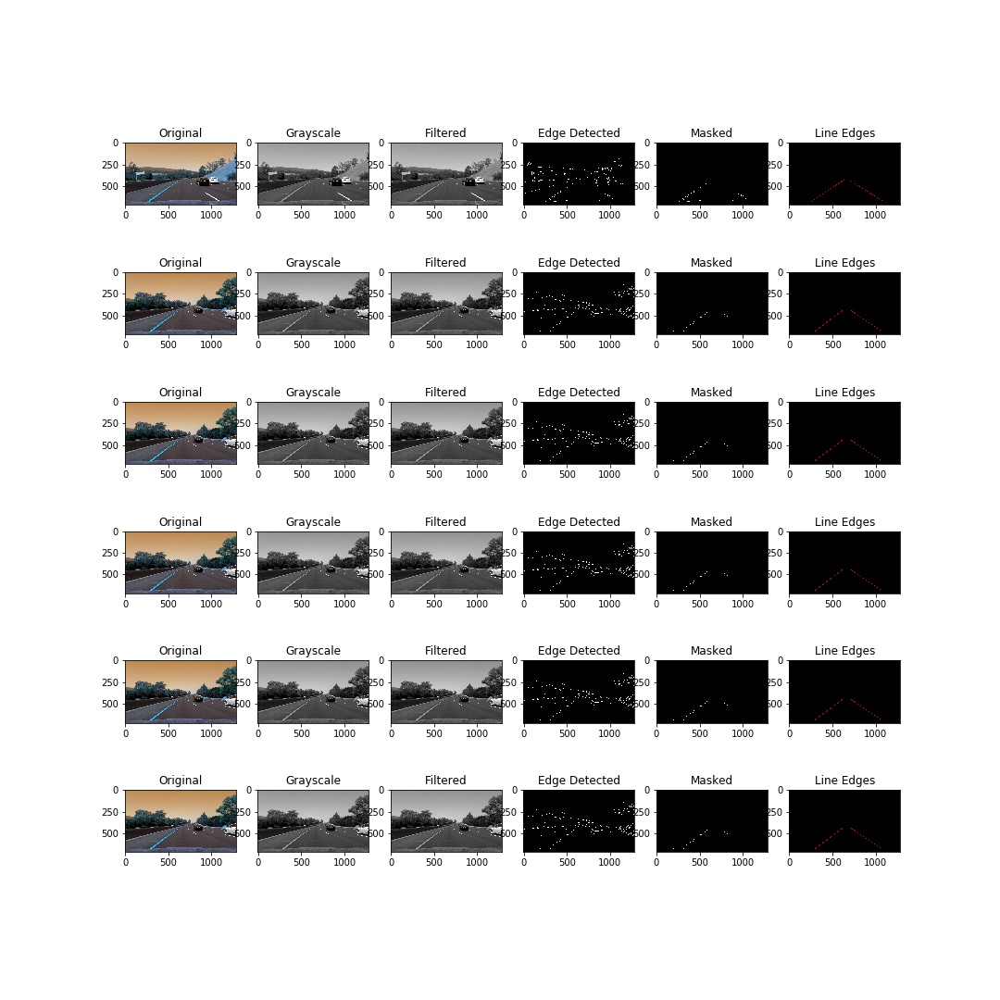
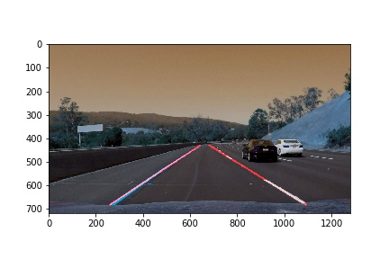

Finding Lane Lines on the Road
The goals / steps of this project are the following:
My pipeline consisted of 6 steps (including the final overlay).
Conversion to grayscale In this step the image was converted from the imported RGB format to Grayscale
Gaussian Blurring Applied a low pass gaussian filter to eliminate high frequency noise. Used a kernel size of 5 as the feature set of interest to us is pretty large in dimensions. The low pass filtering will have minimal effect on feature extraction.
Canny Edge Detection Applied Canny edge detection with low_threshold of 100 and a high_threshold of 225 These values seemed to work best for the challenge exercise. I wider window seemed better for the first two exercises.
Polygon Masking I initially employed a heuristic threshold for the first two exercises.
vertices = np.array([[(100,539),(450, 325), (520, 325), (880,539)]], dtype=np.int32)
However, this will only work for images of this specific dimension. This proved to be a problem when attempting to solve the optional challenge. Hence, I adopted a more adaptive polygon selection that was dependent on the image shape.
vertices = np.array([[(.1*width,.95*height),(.45*width, .6*height), (.55*width, .6*height), (.9*width,.95*height)]], dtype=np.int32)
Line Detection - Using Hough Transforms Use the following parameter set to detect lines from the edge detected image.
rho = 1
theta = np.pi/180 # radians
threshold = 10
min_line_len = 50
max_line_gap =50
Detection of lines wasn't a big issue but extrapolation of the line required some work. As suggested I used the computed slopes to categorize the detected lines (left and right lane markers). However, there was some miscategorization due to smaller line segments on both sides of the aisle with slopes in the incorrect direction.
So I decided to divide the image into two halves assuming the camera is mounted in the center of the vehicle and the image in itself is centerd.
I looked for lines with a negative slope in the first vertical half of the image to detect the left lane and a similar approach on the second half for the right lane.
This worked pretty well for the first two exercises but caused issues for the optional challenge. There were almost horizontal lines detected in the image that impacted the line fitting that follows. So I decided to only look at slopes > ~26deg
After this I used linear fit on the extracted points to extrapolate the line between:
ylim = [int(.6*height),int(.95*height)]

Overlay This was just a simple overlay on the original RGB image. 
There are several potential shortcomings in this pipeline: